Code show/hide
pbc3 <- data.frame(read.csv("data/pbc3.csv"))
pbc3$fail <- as.numeric(with(pbc3, status > 0))
pbc3$log2bili <- with(pbc3, log2(bili))pbc3 <- data.frame(read.csv("data/pbc3.csv"))
pbc3$fail <- as.numeric(with(pbc3, status > 0))
pbc3$log2bili <- with(pbc3, log2(bili))# General plotting style
library(ggplot2)
theme_general <- theme_bw() +
theme(legend.position = "bottom",
text = element_text(size = 20),
axis.text.x = element_text(size = 20),
axis.text.y = element_text(size = 20))
# Calculate pseudo-observations of the survival function for subjects
# The subjects with ptno=415 and ptno=458 are selected
library(pseudo)
pseudo_allt <- pseudosurv(pbc3$days, pbc3$fail)
# Re-arrange the data into a long data set
b <- NULL
for(it in 1:length(pseudo_allt$time)){
b <- rbind(b,cbind(pbc3,
pseudo = pseudo_allt$pseudo[,it],
tpseudo = pseudo_allt$time[it],
id = 1:nrow(pbc3)))
}
b <- b[order(b$id),]
pseudo_alltid <- b
# Subset the two subjects
subdat <- subset(pseudo_alltid, id %in% c("305", "325"))
# Collect data for plot
pseudodata <- data.frame(tpseudo = subdat$tpseudo / 365.25,
pseudo = subdat$pseudo,
id = as.factor(subdat$id))
fig6.1 <- ggplot(aes(x = tpseudo, y = pseudo, linetype = id),
data = pseudodata) +
geom_hline(yintercept = c(0, 1), color = "darkgrey", size = 1) +
geom_step(linewidth = 1) +
scale_linetype_manual("Patient number", values = c("dashed", "dotted")) +
xlab("Time since randomization (years)") +
ylab("Pseudo-values") +
scale_x_continuous(expand = expansion(mult = c(0.02, 0.05))) +
scale_y_continuous(expand = expansion(mult = c(0.05, 0.05))) +
theme_general +
theme(legend.position = "none")
fig6.1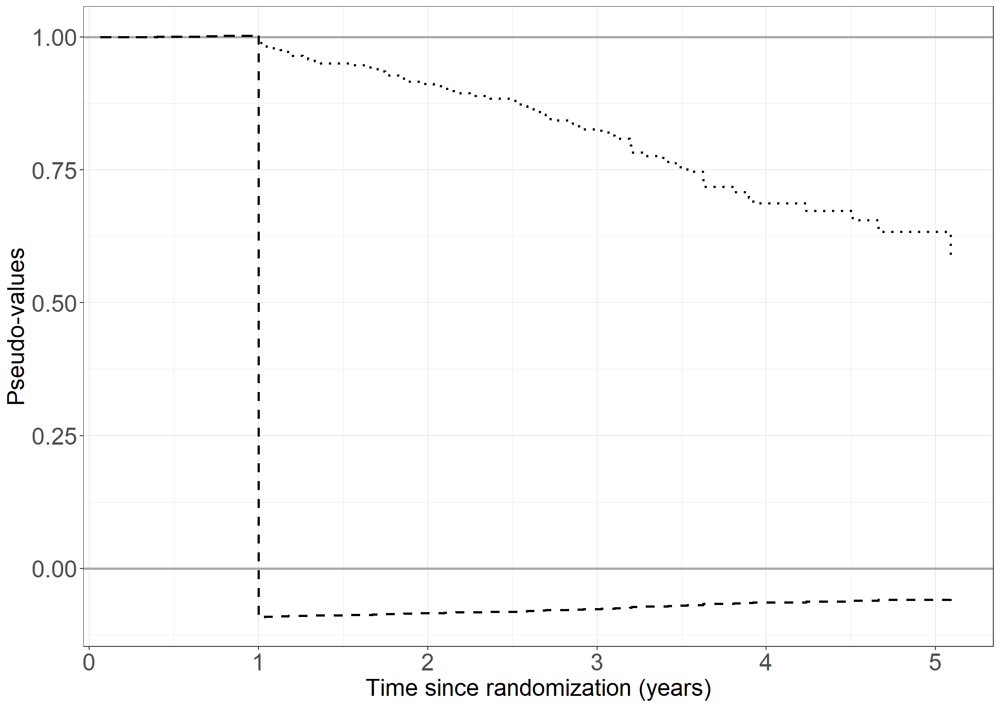
theme_general_1 <- theme_bw() +
theme(legend.position = "none",
text = element_text(size = 26),
axis.text.x = element_text(size = 26),
axis.text.y = element_text(size = 26))
# Select the pseudo-observations at times
times <- c(366, 743, 1105)
# At 1 year
pseudo_t1 <- subset(pseudo_alltid, tpseudo == times[1])
# Collect data for plot
pseudodata <- data.frame(tpseudo = pseudo_t1$tpseudo / 365.25,
days = pseudo_t1$days,
pseudo = pseudo_t1$pseudo,
failtype = as.factor(pseudo_t1$fail))
fig6.2 <- ggplot(aes(x = days / 365.25, y = pseudo, shape = failtype),
data = pseudodata) +
geom_point(size = 6) +
scale_shape_manual("Fail", values = c(4, 1)) +
xlab(expression("X"[i]*" (years)")) +
ylab("Pseudo-values") +
scale_x_continuous(expand = expansion(mult = c(0.05, 0.05)),
breaks = seq(0, 6, 1)) +
scale_y_continuous(expand = expansion(mult = c(0.05, 0.05)),
limits = c(-0.9, 1.1)) +
theme_general_1
fig6.2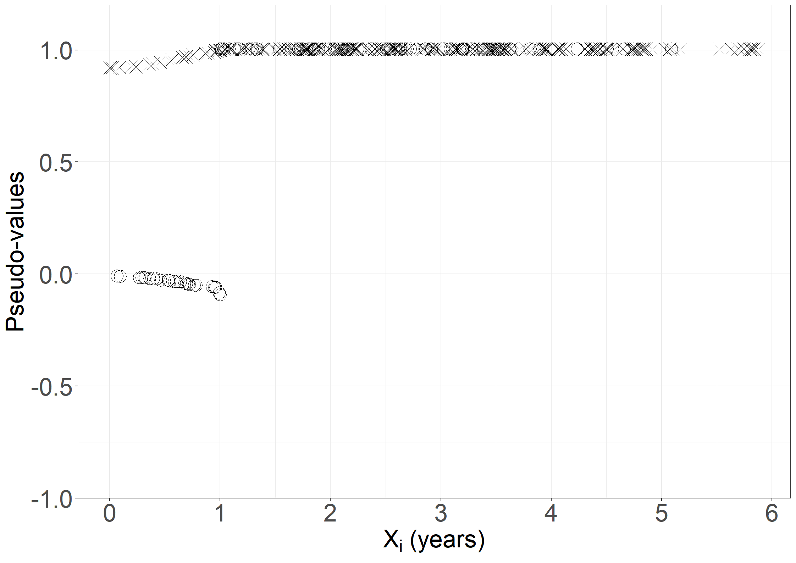
# At 2 years
pseudo_t2 <- subset(pseudo_alltid, tpseudo == times[2])
# Collect data for plot
pseudodata <- data.frame(tpseudo = pseudo_t2$tpseudo / 365.25,
days = pseudo_t2$days,
pseudo = pseudo_t2$pseudo,
failtype = as.factor(pseudo_t2$fail))
fig6.2b <- ggplot(aes(x = days / 365.25, y = pseudo, shape = failtype),
data = pseudodata) +
geom_point(size = 6) +
scale_shape_manual("Fail", values = c(4, 1)) +
xlab(expression("X"[i]*" (years)")) +
ylab("Pseudo-values") +
scale_x_continuous(expand = expansion(mult = c(0.05, 0.05)),
breaks = seq(0, 6, 1)) +
scale_y_continuous(expand = expansion(mult = c(0.05, 0.05)),
limits = c(-0.9, 1.1)) +
theme_general_1
fig6.2b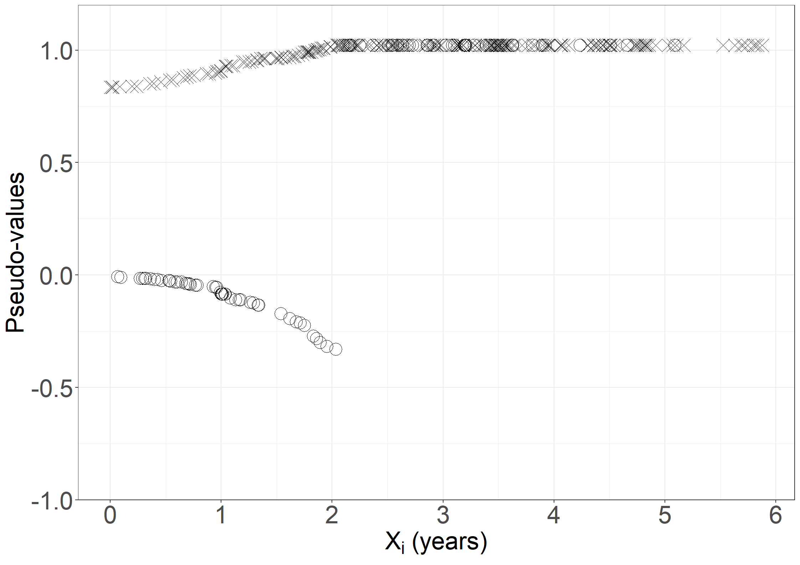
# At 3 years
pseudo_t3 <- subset(pseudo_alltid, tpseudo == times[3])
# Collect data for plot
pseudodata <- data.frame(tpseudo = pseudo_t3$tpseudo / 365.25,
days = pseudo_t3$days,
pseudo = pseudo_t3$pseudo,
failtype = as.factor(pseudo_t3$fail))
fig6.2c <- ggplot(aes(x = days/365.25, y = pseudo, shape = failtype),
data = pseudodata) +
geom_point(size = 6) +
scale_shape_manual("Fail", values = c(4, 1)) +
xlab(expression("X"[i]*" (years)")) +
ylab("Pseudo-values") +
scale_x_continuous(expand = expansion(mult = c(0.05, 0.05)),
breaks = seq(0, 6, 1)) +
scale_y_continuous(expand = expansion(mult = c(0.05, 0.05)),
limits = c(-0.9, 1.1)) +
theme_general_1 +
theme(legend.position="none")
fig6.2c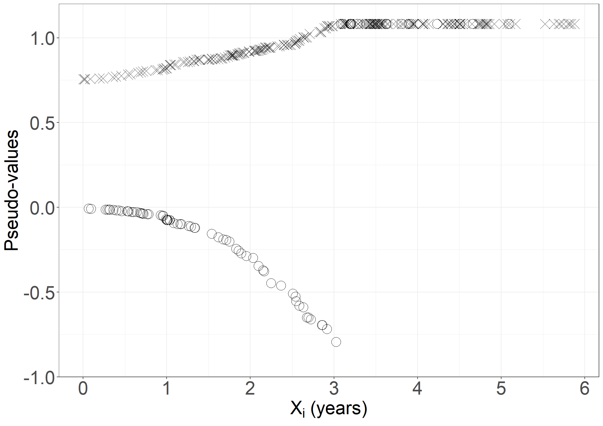
# Collect data for plot
pseudodata <- data.frame(tpseudo = pseudo_t2$tpseudo / 365.25,
days = pseudo_t2$days,
pseudo = pseudo_t2$pseudo,
log2bili = pseudo_t2$log2bili,
bili = pseudo_t2$bili,
alb = pseudo_t2$alb,
tment = pseudo_t2$tment,
id = pseudo_t2$id,
failtype = as.factor(pseudo_t2$fail))
bili_loess <- loess(pseudo ~ bili, data = pseudodata, span = 0.8, degree = 1)
pseudodata$loesspred <- predict(bili_loess)
pseudodata$t_loesspred <- with(
pseudodata, ifelse(loesspred > 0 , log(-log(loesspred)), NA)
)
fig6.3left <- ggplot(aes(x = bili, y = pseudo), data = pseudodata) +
geom_point(size = 4, shape = 4) +
geom_line(aes(x = bili, y = loesspred), size = 1) +
xlab("Bilirubin") +
ylab("Pseudo-values") +
scale_x_continuous(expand = expansion(mult = c(0.05, 0.05))) +
scale_y_continuous(expand = expansion(mult = c(0.05, 0.05)),
breaks = seq(-0.4, 1.2, by = 0.2),
limits = c(-0.4, 1.2)) +
theme_general
fig6.3left
fig6.3right <- ggplot(aes(x = bili, y = t_loesspred), data = pseudodata) +
geom_line(size = 1) +
xlab("Bilirubin") +
ylab("log(-log(predicted pseudo-values))") +
scale_x_continuous(expand = expansion(mult = c(0.05, 0.05))) +
scale_y_continuous(expand = expansion(mult = c(0.05, 0.05)),
breaks = seq(-5, 2, by = 1),
limits = c(-5, 2)) +
theme_general
fig6.3right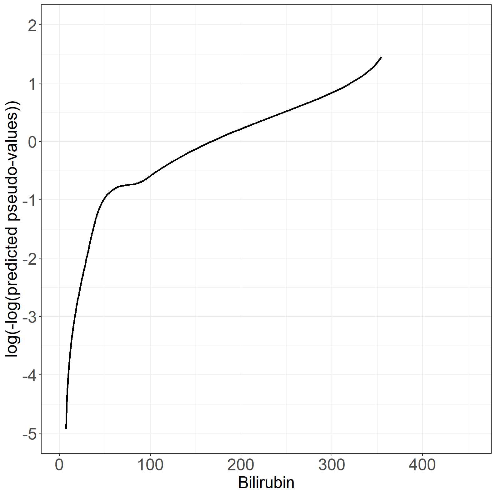
# Loess for log2 bili
log2bili_loess <- loess(pseudo ~ log2bili, data = pseudodata, span = 0.8, degree = 1)
pseudodata$log2bili_loesspred <- predict(log2bili_loess)
pseudodata$t_log2bili_loesspred <- with(pseudodata,
ifelse(log2bili_loesspred > 0 , log(-log(log2bili_loesspred)), NA))
fig6.4left <- ggplot(aes(x = log2bili, y = pseudo), data = pseudodata) +
geom_point(size = 4, shape = 4) +
geom_line(aes(x = log2bili, y = log2bili_loesspred), size = 1) +
xlab(expression("log" [2] * "(bilirubin)")) +
ylab("Pseudo-values") +
scale_x_continuous(expand = expansion(mult = c(0.05, 0.05)), limits = c(1, 9),
breaks = seq(1, 9, by = 1)) +
scale_y_continuous(expand = expansion(mult = c(0.05, 0.05)), breaks = seq(-0.4, 1.2, by = 0.2),
limits = c(-0.4, 1.2)) +
theme_general
fig6.4left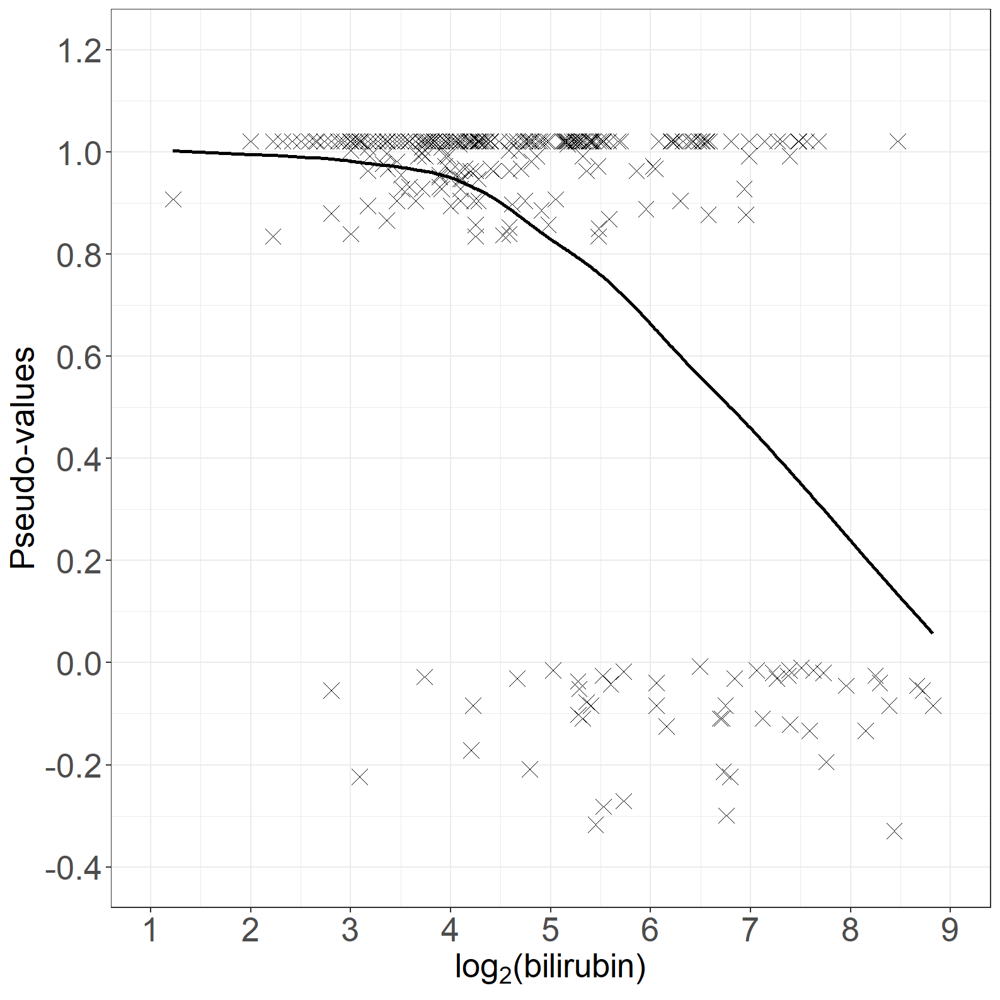
fig6.4right <- ggplot(aes(x = log2bili, y = t_log2bili_loesspred), data = pseudodata) +
geom_line(size = 1) +
xlab(expression("log" [2] * "(bilirubin)")) +
ylab("log(-log(predicted pseudo-values))") +
scale_x_continuous(expand = expansion(mult = c(0.05, 0.05)), limits = c(1, 9),
breaks = seq(1, 9, by = 1)) +
scale_y_continuous(expand = expansion(mult = c(0.05, 0.05)), breaks = seq(-5, 2, by = 1),
limits = c(-5, 2)) +
theme_general
fig6.4right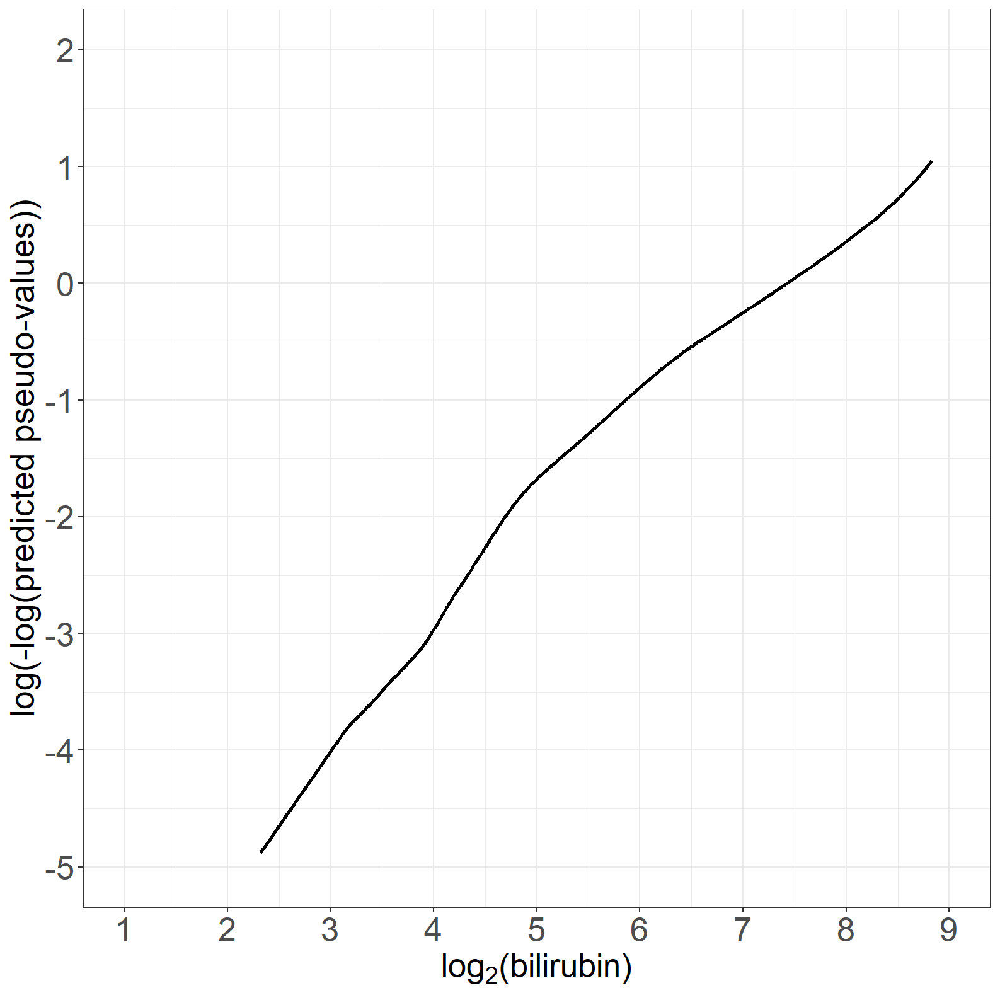
TODO: SDs for the three time points model are not as in table in Book
posumm<-function(pofit,d=6){
round(cbind(
Est = pofit$beta,
SD = sqrt(diag(pofit$vbeta)),
lo.ci = pofit$beta-1.96*sqrt(diag(pofit$vbeta)),
up.ci = pofit$beta+1.96*sqrt(diag(pofit$vbeta)),
Wald = (pofit$beta/sqrt(diag(pofit$vbeta)))^2,
PVal = 2-2*pnorm(abs(pofit$beta/sqrt(diag(pofit$vbeta))))),d)
}
posummExp<-function(pofit,d=6){
round(cbind(
est = pofit$beta,
SD = sqrt(diag(pofit$vbeta)),
exp.est = exp(pofit$beta),
exp.lo.ci = exp(pofit$beta-1.96*sqrt(diag(pofit$vbeta))),
exp.up.ci = exp(pofit$beta+1.96*sqrt(diag(pofit$vbeta))),
PVal = 2-2*pnorm(abs(pofit$beta/sqrt(diag(pofit$vbeta))))),d)
}
# At time year 2
fit1 <- geese(formula = I(1 - pseudo) ~ tment +alb + log2bili,
data = subset(pseudodata, !is.na(alb)),
id = id,
mean.link = "cloglog")
posummExp(fit1) est SD exp.est exp.lo.ci exp.up.ci PVal
(Intercept) -2.116642 1.326984 0.120435 0.008937 1.622951 0.110695
tment -0.705053 0.369341 0.494082 0.239557 1.019035 0.056269
alb -0.105069 0.034169 0.900263 0.841946 0.962618 0.002105
log2bili 0.835723 0.140429 2.306480 1.751517 3.037282 0.000000# At time year c(1, 2, 3)
# Select the pseudo-observations at times
times <- c(366, 743, 1105)
pseudo_t1 <- subset(pseudo_alltid, tpseudo == times[1])
pseudo_t2 <- subset(pseudo_alltid, tpseudo == times[2])
pseudo_t3 <- subset(pseudo_alltid, tpseudo == times[3])
pseudo_t <- rbind(pseudo_t1, pseudo_t2, pseudo_t3)
pseudodata_t <- data.frame(tpseudo = pseudo_t$tpseudo / 365.25,
days = pseudo_t$days,
pseudo = pseudo_t$pseudo,
log2bili = pseudo_t$log2bili,
bili = pseudo_t$bili,
alb = pseudo_t$alb,
tment = pseudo_t$tment,
id = pseudo_t$id,
failtype = as.factor(pseudo_t$fail))
# At time year c(1, 2, 3)
fit2 <- geese(formula = I(1 - pseudo) ~ tment + alb + log2bili + as.factor(tpseudo) -1,
data = subset(pseudodata_t, !is.na(alb)),
id = id,
mean.link = "cloglog",
corstr="independence")
posummExp(fit2) est SD exp.est exp.lo.ci
tment -0.598536 0.213046 0.549616 0.362002
alb -0.093907 0.019069 0.910367 0.876970
log2bili 0.684093 0.071818 1.981972 1.721729
as.factor(tpseudo)1.00205338809035 -2.474620 0.829782 0.084195 0.016556
as.factor(tpseudo)2.03422313483915 -1.554010 0.810703 0.211399 0.043154
as.factor(tpseudo)3.02532511978097 -1.123233 0.813730 0.325227 0.065997
exp.up.ci PVal
tment 0.834464 0.004963
alb 0.945036 0.000001
log2bili 2.281552 0.000000
as.factor(tpseudo)1.00205338809035 0.428165 0.002861
as.factor(tpseudo)2.03422313483915 1.035587 0.055255
as.factor(tpseudo)3.02532511978097 1.602682 0.167479# At time year c(1, 2, 3)
fit2 <- geese(formula = I(1 - pseudo) ~ as.factor(tpseudo) + log2bili + alb + tment - 1,
data = subset(pseudodata_t, !is.na(alb)),
id = id,
mean.link = "cloglog",
variance = "gaussian",
scale.value = 0,
scale.fix = 1)
pseudodata_t$pred <- rep(NA, nrow(pseudodata_t))
# At time 1
pseudodata_t[pseudodata_t$tpseudo == times[1] / 365.25,]$pred <-
with(pseudodata_t[pseudodata_t$tpseudo == times[1] / 365.25,],
fit2$beta[1] + fit2$beta[4]*log2bili + fit2$beta[5]*alb + fit2$beta[6]*tment)
# At time 2
pseudodata_t[pseudodata_t$tpseudo == times[2] / 365.25,]$pred <-
with(pseudodata_t[pseudodata_t$tpseudo == times[2] / 365.25,],
fit2$beta[2] + fit2$beta[4]*log2bili + fit2$beta[5]*alb + fit2$beta[6]*tment)
# At time 3
pseudodata_t[pseudodata_t$tpseudo == times[3] / 365.25,]$pred <-
with(pseudodata_t[pseudodata_t$tpseudo == times[3] / 365.25,],
fit2$beta[3] + fit2$beta[4]*log2bili + fit2$beta[5]*alb + fit2$beta[6]*tment)
# Transform back
pseudodata_t$res <- with(pseudodata_t, pseudo - exp(-exp(pred)))
pseudodata_t$time <- as.factor(pseudodata_t$tpseudo * 365.25)
# Make loess smooth per time
log2bili_res_loess_1 <- loess(res ~ log2bili,
data = subset(pseudodata_t, time == 366), span = 0.7, degree = 1)
log2bili_res_loess_2 <- loess(res ~ log2bili,
data = subset(pseudodata_t, time == 743), span = 0.7, degree = 1)
log2bili_res_loess_3 <- loess(res ~ log2bili,
data = subset(pseudodata_t, time == 1105), span = 0.7, degree = 1)
log2bili_res_pred_1 <- predict(log2bili_res_loess_1, newdata = subset(pseudodata_t, time == 366))
log2bili_res_pred_2 <- predict(log2bili_res_loess_2, newdata = subset(pseudodata_t, time == 743))
log2bili_res_pred_3 <- predict(log2bili_res_loess_3, newdata = subset(pseudodata_t, time == 1105))
pseudodata_t$log2bili_res_pred <- c(log2bili_res_pred_1, log2bili_res_pred_2, log2bili_res_pred_3)
fig6.5 <- ggplot(aes(x = log2bili, y = res, shape = time), data = pseudodata_t) +
geom_line(aes(x = log2bili, y = log2bili_res_pred , linetype = time), size = 1) +
geom_point(size = 3) +
scale_shape_manual("Year", values = c(4, 2, 0), labels = c("1", "2", "3")) +
scale_linetype_manual("Year", values = c("dashed", "solid", "dotted"), labels = c("1", "2", "3")) +
xlab(expression("log" [2] * "(bilirubin)")) +
ylab("Pseudo-residuals") +
scale_x_continuous(expand = expansion(mult = c(0.05, 0.05)), limits = c(1, 9),
breaks = seq(1, 9, by = 1)) +
scale_y_continuous(expand = expansion(mult = c(0.05, 0.05)), breaks = seq(-2, 1, by = 1),
limits = c(-2, 1)) +
theme_general +
theme(legend.box = "vertical",
text = element_text(size=20),
legend.key.size = unit(1.5, 'cm'),
legend.text = element_text(size = 20))
fig6.5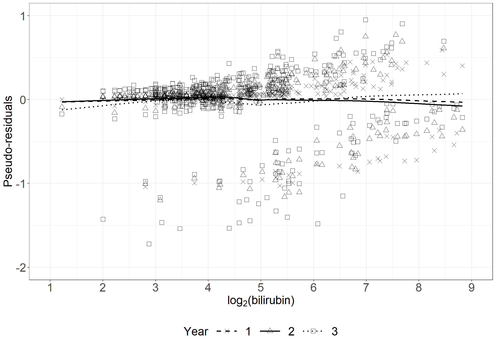
# At time year c(1, 2, 3) using log-link instead
fit2 <- geese(formula = pseudo ~ as.factor(tpseudo) + bili + alb + tment - 1,
data = subset(pseudodata_t, !is.na(alb)),
id = id,
mean.link = "log",
variance = "gaussian",
scale.value = 0,
scale.fix = 1, maxit = 50)
summary(fit2)
Call:
geese(formula = pseudo ~ as.factor(tpseudo) + bili + alb + tment -
1, id = id, data = subset(pseudodata_t, !is.na(alb)), mean.link = "log",
variance = "gaussian", scale.fix = 1, scale.value = 0, maxit = 50)
Mean Model:
Mean Link: log
Variance to Mean Relation: gaussian
Coefficients:
estimate san.se wald
as.factor(tpseudo)1.00205338809035 -0.340268943 0.1038790249 10.729733
as.factor(tpseudo)2.03422313483915 -0.412025685 0.1063019966 15.023314
as.factor(tpseudo)3.02532511978097 -0.507547919 0.1089067608 21.719230
bili -0.004191576 0.0005629232 55.444219
alb 0.009689574 0.0023542035 16.940310
tment 0.048389674 0.0227323690 4.531229
p
as.factor(tpseudo)1.00205338809035 1.054277e-03
as.factor(tpseudo)2.03422313483915 1.061912e-04
as.factor(tpseudo)3.02532511978097 3.156116e-06
bili 9.614531e-14
alb 3.857371e-05
tment 3.328171e-02
Scale is fixed.
Correlation Model:
Correlation Structure: independence
Returned Error Value: 0
Number of clusters: 1029 Maximum cluster size: 1 ## - log scale used as link in Table 6.2 (add "-" in front of all estimates)
# No default "-log(x)" link function in R# Create Figure 6.6 (a) - done earlier
fig6.6left <- fig6.3left
fig6.6left
# Same as earlier:
bili_loess <- loess(pseudo ~ bili, data = pseudodata, span = 0.8, degree = 1)
pseudodata$loesspred <- predict(bili_loess)
# Use log-trans instead of cloglog
pseudodata$log_loesspred <- with(pseudodata,
ifelse(loesspred > 0 , -log(loesspred), NA))
fig6.6right <- ggplot(aes(x = bili, y = log_loesspred), data = pseudodata) +
geom_line(size = 1) +
xlab("Bilirubin") +
ylab("-log(predicted pseudo-values)") +
scale_x_continuous(expand = expansion(mult = c(0.05, 0.05))) +
scale_y_continuous(expand = expansion(mult = c(0.05, 0.05)), breaks = seq(-1, 3, by = 1),
limits = c(-1, 3)) +
theme_general
fig6.6right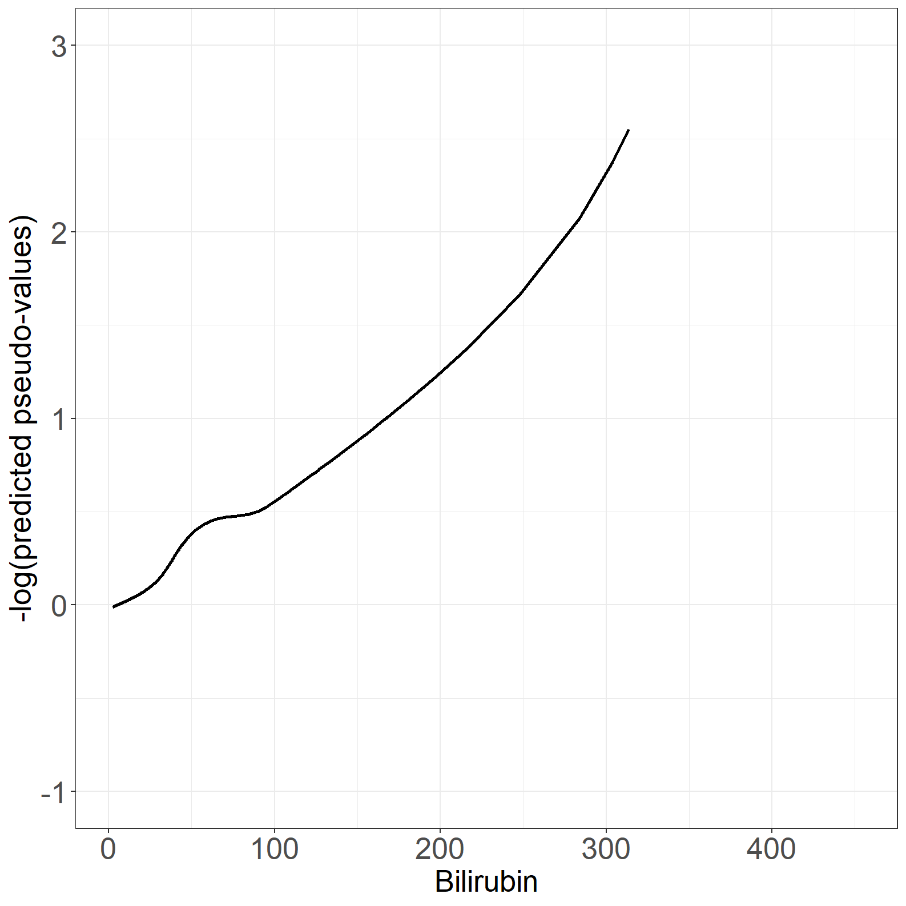
# Use regression estimates from fit2
pseudodata_t$pred <- rep(NA, nrow(pseudodata_t))
# At time 1
pseudodata_t[pseudodata_t$tpseudo == times[1] / 365.25,]$pred <-
with(pseudodata_t[pseudodata_t$tpseudo == times[1] / 365.25,],
fit2$beta[1] + fit2$beta[4]*bili + fit2$beta[5]*alb + fit2$beta[6]*tment)
# At time 2
pseudodata_t[pseudodata_t$tpseudo == times[2] / 365.25,]$pred <-
with(pseudodata_t[pseudodata_t$tpseudo == times[2] / 365.25,],
fit2$beta[2] + fit2$beta[4]*bili + fit2$beta[5]*alb + fit2$beta[6]*tment)
# At time 3
pseudodata_t[pseudodata_t$tpseudo == times[3] / 365.25,]$pred <-
with(pseudodata_t[pseudodata_t$tpseudo == times[3] / 365.25,],
fit2$beta[3] + fit2$beta[4]*bili + fit2$beta[5]*alb + fit2$beta[6]*tment)
# Transform back
pseudodata_t$res <- with(pseudodata_t, pseudo - exp(pred))
pseudodata_t$time <- as.factor(pseudodata_t$tpseudo * 365.25)
# Make loess smooth per time
bili_res_loess_1 <- loess(res ~ bili,
data = subset(pseudodata_t, time == 366),
span = 0.7, degree = 1)
bili_res_loess_2 <- loess(res ~ bili,
data = subset(pseudodata_t, time == 743),
span = 0.7, degree = 1)
bili_res_loess_3 <- loess(res ~ bili,
data = subset(pseudodata_t, time == 1105),
span = 0.7, degree = 1)
bili_res_pred_1 <- predict(bili_res_loess_1,
newdata = subset(pseudodata_t, time == 366))
bili_res_pred_2 <- predict(bili_res_loess_2,
newdata = subset(pseudodata_t, time == 743))
bili_res_pred_3 <- predict(bili_res_loess_3,
newdata = subset(pseudodata_t, time == 1105))
pseudodata_t$bili_res_pred <- c(bili_res_pred_1,
bili_res_pred_2,
bili_res_pred_3)
# Create Figure
fig6.7 <- ggplot(aes(x = bili, y = res, shape = time), data = pseudodata_t) +
geom_line(aes(x = bili, y = bili_res_pred , linetype = time), size = 1) +
geom_point(size = 3) +
scale_shape_manual("Year", values = c(4, 2, 0),
labels = c("1", "2", "3")) +
scale_linetype_manual("Year",
values = c("dashed", "solid", "dotted"),
labels = c("1", "2", "3")) +
xlab(expression("Bilirubin")) +
ylab("Pseudo-residuals") +
scale_x_continuous(expand = expansion(mult = c(0.05, 0.05)),
limits = c(0, 500),
breaks = seq(0, 500, by = 100)) +
scale_y_continuous(expand = expansion(mult = c(0.05, 0.05)),
breaks = seq(-2, 1, by = 1),
limits = c(-2, 1)) +
theme_general +
theme(legend.box = "vertical",
text = element_text(size=20),
legend.key.size = unit(2, 'cm'),
legend.text = element_text(size = 20))
fig6.7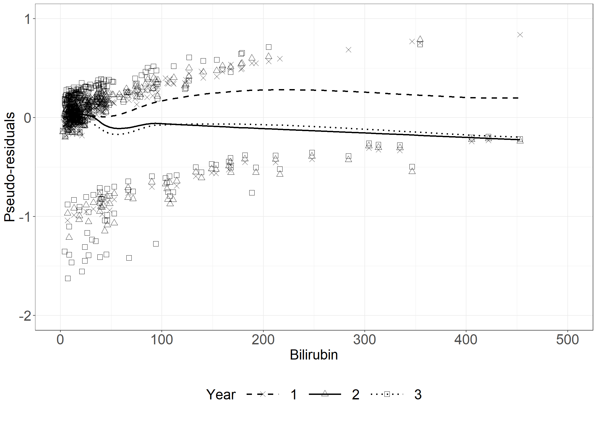
# Calculate pseudo-observations of the restricted mean for subjects
pseudo_allt <- pseudomean(pbc3$days / 365.25, pbc3$fail, tmax = 3)
# Re-arrange the data into a long data set
a <- cbind(pbc3, pseudo = pseudo_allt)
outmean3 <- a
# Fit model
fit_resm <- geese(pseudo ~ tment + alb+ log2bili, id = id,
data = subset(outmean3, !is.na(alb)),
mean.link = "identity", corstr = "independence",
scale.fix = FALSE,
family = "gaussian")
posumm(fit_resm) Est SD lo.ci up.ci Wald PVal
(Intercept) 2.825598 0.346121 2.147201 3.503995 66.644608 0.000000
tment 0.147813 0.072936 0.004858 0.290769 4.107123 0.042703
alb 0.022512 0.006811 0.009162 0.035862 10.924256 0.000949
log2bili -0.243093 0.031982 -0.305778 -0.180408 57.773091 0.000000# Collect data for plot
pseudodata <- data.frame(days = outmean3$days,
pseudo = outmean3$pseudo,
failtype = as.factor(outmean3$fail))
fig6.8 <- ggplot(aes(x = days / 365.25, y = pseudo, shape = failtype), data = pseudodata) +
geom_point(size = 6) +
scale_shape_manual("Fail", values = c(4, 1)) +
xlab(expression("X"[i]*" (years)")) +
ylab("Pseudo-values") +
scale_x_continuous(expand = expansion(mult = c(0.05, 0.05)), limits = c(0, 6),
breaks = seq(0, 6, by = 1)) +
scale_y_continuous(expand = expansion(mult = c(0.05, 0.05)), limits = c(0, 4)) +
theme_general +
theme(legend.position="none")
fig6.8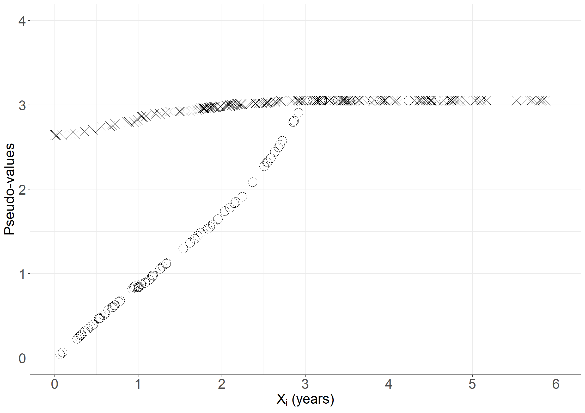
# Loess for log2 bili
log2bili_loess <- loess(pseudo ~ log2bili, data = outmean3, span = 0.8, degree = 1)
outmean3$log2bili_loesspred <- predict(log2bili_loess)
#outmean3$t_log2bili_loesspred <- with(outmean3,
# ifelse(log2bili_loesspred > 0 ,
# log(log2bili_loesspred/(1-log2bili_loesspred)), NA))
fig6.9 <- ggplot(aes(x = log2bili, y = pseudo), data = outmean3) +
geom_point(size = 6, shape = 4) +
geom_line(aes(x = log2bili, y = log2bili_loesspred), size = 1) +
xlab(expression("log" [2] * "(bilirubin)")) +
ylab("Pseudo-values") +
scale_x_continuous(expand = expansion(mult = c(0.01, 0.05)), limits = c(1, 9),
breaks = seq(1, 9, by = 1)) +
scale_y_continuous(expand = expansion(mult = c(0.01, 0.05)), breaks = seq(0, 4, by = 1),
limits = c(0, 4)) +
theme_general
fig6.9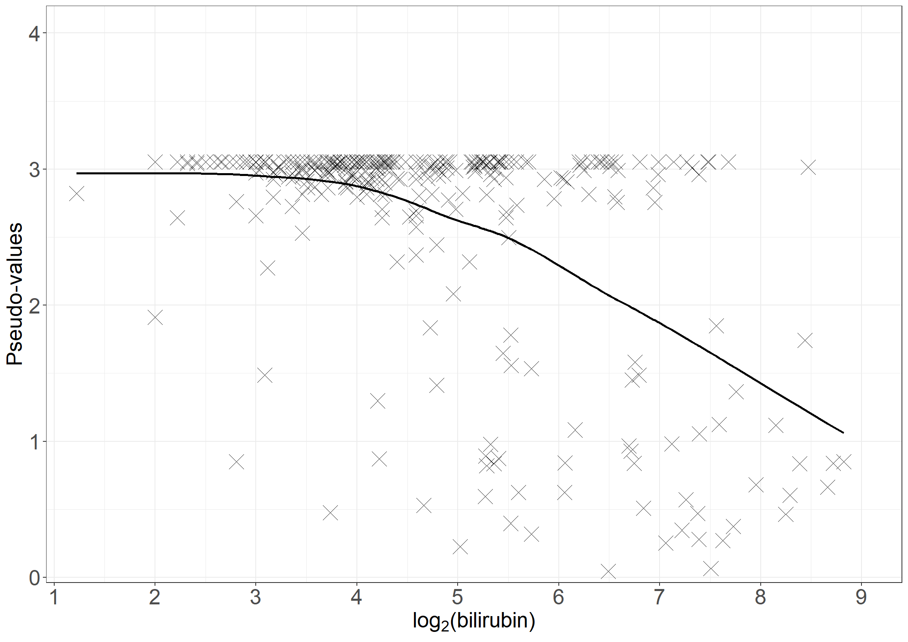
# Lost years
pseudolost <- pseudoyl(time = pbc3$days / 365.25,
event = as.integer(pbc3$status),
tmax = 3)
a1 <- cbind(pbc3,pseudo = pseudolost$pseudo[[1]],id=1:nrow(pbc3))
a2 <- cbind(pbc3,pseudo = pseudolost$pseudo[[2]],id=1:nrow(pbc3))
summary(fityl1 <- geese(pseudo ~ tment,
data = a1, id = id, jack = TRUE, family = gaussian,
corstr = "independence", scale.fix = FALSE))
Call:
geese(formula = pseudo ~ tment, id = id, data = a1, family = gaussian,
scale.fix = FALSE, corstr = "independence", jack = TRUE)
Mean Model:
Mean Link: identity
Variance to Mean Relation: gaussian
Coefficients:
estimate san.se ajs.se wald p
(Intercept) 0.14304562 0.04121590 0.04127696 12.045356 0.0005192156
tment -0.05638594 0.05102947 0.05110332 1.220955 0.2691733775
Scale Model:
Scale Link: identity
Estimated Scale Parameters:
estimate san.se ajs.se wald p
(Intercept) 0.2260261 0.05100506 0.0515204 19.63771 9.360351e-06
Correlation Model:
Correlation Structure: independence
Returned Error Value: 0
Number of clusters: 349 Maximum cluster size: 1 summary(fityl2 <- geese(pseudo ~ tment,
data = a2, id = id, jack = TRUE, family = gaussian,
corstr = "independence", scale.fix = FALSE))
Call:
geese(formula = pseudo ~ tment, id = id, data = a2, family = gaussian,
scale.fix = FALSE, corstr = "independence", jack = TRUE)
Mean Model:
Mean Link: identity
Variance to Mean Relation: gaussian
Coefficients:
estimate san.se ajs.se wald p
(Intercept) 0.25153053 0.05315608 0.05323484 22.39110068 2.224022e-06
tment -0.01520994 0.07291925 0.07302390 0.04350814 8.347714e-01
Scale Model:
Scale Link: identity
Estimated Scale Parameters:
estimate san.se ajs.se wald p
(Intercept) 0.4634606 0.0697068 0.07040943 44.2054 2.956646e-11
Correlation Model:
Correlation Structure: independence
Returned Error Value: 0
Number of clusters: 349 Maximum cluster size: 1 summary(fityl1 <- geese(pseudo ~ tment + alb + log2(bili),
data = subset(a1,!is.na(alb)), id = id, jack = TRUE,
family = gaussian,
corstr = "independence", scale.fix = FALSE))
Call:
geese(formula = pseudo ~ tment + alb + log2(bili), id = id, data = subset(a1,
!is.na(alb)), family = gaussian, scale.fix = FALSE, corstr = "independence",
jack = TRUE)
Mean Model:
Mean Link: identity
Variance to Mean Relation: gaussian
Coefficients:
estimate san.se ajs.se wald p
(Intercept) -0.2925955874 0.214509773 0.219305817 1.86055015 0.1725613190
tment -0.0629704571 0.045824402 0.046173406 1.88833949 0.1693893294
alb -0.0007479074 0.004088095 0.004166756 0.03346984 0.8548390903
log2(bili) 0.1001512112 0.026281542 0.026811333 14.52147461 0.0001385709
Scale Model:
Scale Link: identity
Estimated Scale Parameters:
estimate san.se ajs.se wald p
(Intercept) 0.1877829 0.03991555 0.04086088 22.13236 2.544835e-06
Correlation Model:
Correlation Structure: independence
Returned Error Value: 0
Number of clusters: 343 Maximum cluster size: 1 summary(fityl2 <- geese(pseudo ~ tment + alb + log2(bili),
data = subset(a2,!is.na(alb)), id = id, jack = TRUE,
family = gaussian,
corstr = "independence", scale.fix = FALSE))
Call:
geese(formula = pseudo ~ tment + alb + log2(bili), id = id, data = subset(a2,
!is.na(alb)), family = gaussian, scale.fix = FALSE, corstr = "independence",
jack = TRUE)
Mean Model:
Mean Link: identity
Variance to Mean Relation: gaussian
Coefficients:
estimate san.se ajs.se wald p
(Intercept) 0.46699730 0.323932111 0.328438874 2.07836 1.494006e-01
tment -0.08484277 0.068542273 0.069039590 1.53219 2.157840e-01
alb -0.02176434 0.006549422 0.006642189 11.04295 8.902503e-04
log2(bili) 0.14294187 0.032316673 0.032763783 19.56436 9.726692e-06
Scale Model:
Scale Link: identity
Estimated Scale Parameters:
estimate san.se ajs.se wald p
(Intercept) 0.3914462 0.05096053 0.05211022 59.00331 1.576517e-14
Correlation Model:
Correlation Structure: independence
Returned Error Value: 0
Number of clusters: 343 Maximum cluster size: 1 # comp. end point t=2 smlg med IJ
library(pseudo)
library(survival)
pbc3$nystatus<-ifelse(pbc3$status > 0, 1, 0)
pseudo <- pseudosurv(time = pbc3$days,
event = pbc3$nystatus,
tmax=2 * 365.25)
fit <- survfit(Surv(days, status > 0) ~ 1, data = pbc3)
IJpseudo <- pseudo(fit, times = 2 * 365.25, addNA = TRUE, data.frame = TRUE, minus1 = TRUE)
pdata <- data.frame(IJpseudo = IJpseudo$pseudo,
pseudo = pseudo$pseudo,
diff = IJpseudo$pseudo - pseudo$pseudo)
fig6.11left <- ggplot(aes(x = pseudo, y = IJpseudo), data = pdata) +
geom_point(size = 4, shape = 1) +
geom_line(size = 1) +
ylab("IJ pseudo-value") +
xlab("Pseudo-value") +
scale_x_continuous(limits = c(-0.2, 1),
breaks = seq(-0.2, 1, by = 0.2)) +
scale_y_continuous(limits = c(-0.2, 1),
breaks = seq(-0.2, 1, by = 0.2)) +
theme_general
fig6.11left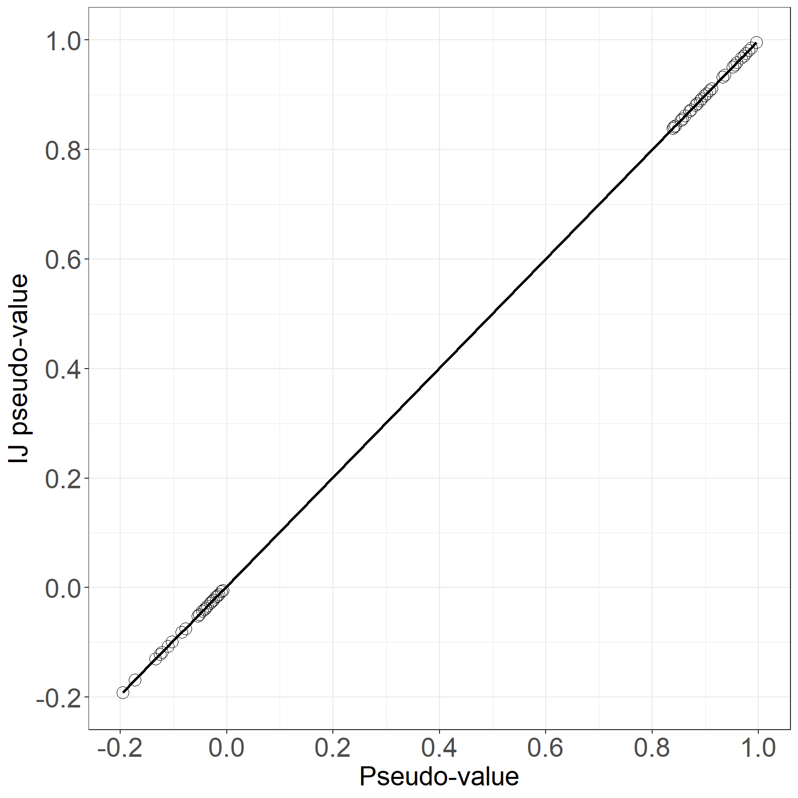
fig6.11right <- ggplot(aes(x = pseudo, y = IJpseudo - pseudo), data = pdata) +
geom_point(size = 4, shape = 1) +
ylab("Difference") +
xlab("Pseudo-value") +
scale_x_continuous(limits = c(-0.2, 1),
breaks = seq(-0.2, 1, by = 0.2)) +
scale_y_continuous(limits = c(-0.01, 0.01),
breaks = seq(-0.01, 0.01, by = 0.005)) +
theme_general
fig6.11right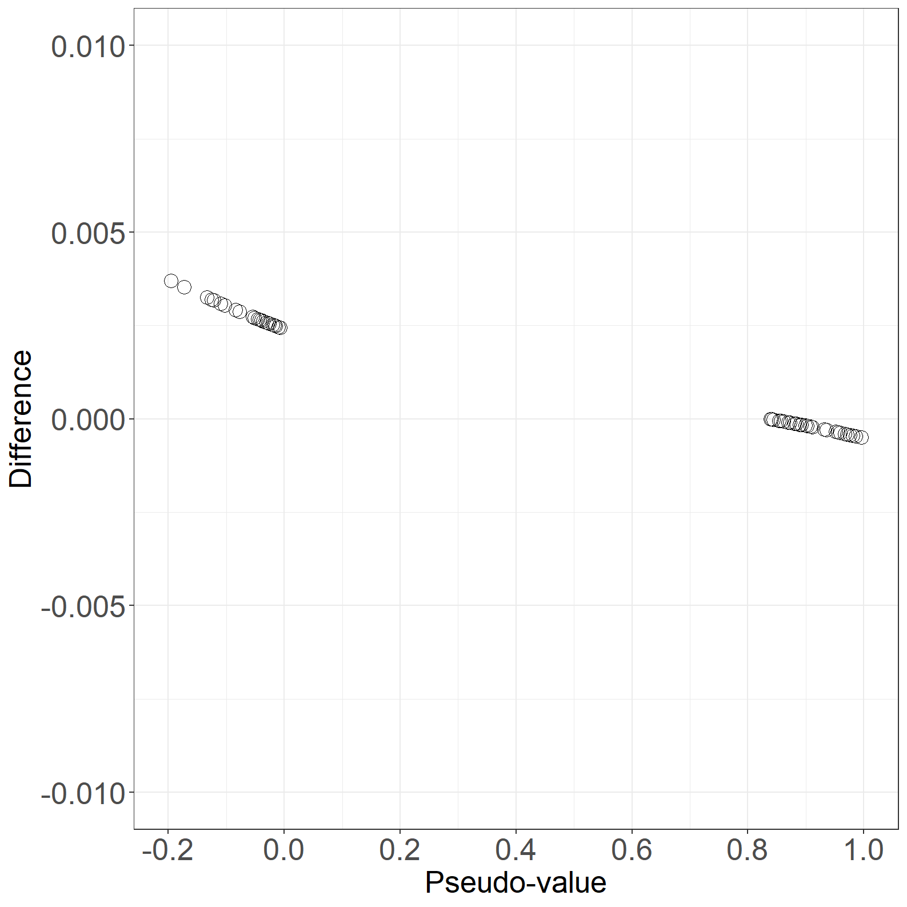
prova <- data.frame(read.csv("data/prova.csv", na.strings = c(".")))
# Treatment 2x2 factorial
prova$beh <- with(prova, as.factor(scle + beta*2))
library(tidyverse)
prova <- prova %>% mutate(timebleed = ifelse(bleed == 1, timebleed, timedeath),
outof0 = ifelse(bleed ==1, 1, death),
wait = ifelse(bleed ==1, timedeath - timebleed, NA))
# Faster processing
require(data.table)
prova <- setDT(prova)
# Setting start times, s = 1 year and s = 2 years
s1 = 365.25
s2 = 2*365.25
#Censoring times
cens_outof0 <- 1509
cens_wait <- 1363TODO: get program to make data file datafig610.csv
library(mstate)
library(survival)
library(data.table) #Faster aggregation of data
# Creating data frame
# Converting data to long format
# Transition matrix for irreversible illness-death model
tmat <- trans.illdeath(names = c("Non-bleeding", "Bleeding", "Dead"))
long_format_scle0 <- msprep(time = c(NA, "timebleed", "timedeath"), status = c(NA, "bleed", "death"), data = subset(as.data.frame(prova), scle ==0), trans = tmat, keep = "scle")
long_format_scle1 <- msprep(time = c(NA, "timebleed", "timedeath"), status = c(NA, "bleed", "death"), data = subset(as.data.frame(prova), scle ==1), trans = tmat, keep = "scle")
# Estimation of transition probabilities with the Landmark Aalen-Johansen estimator
# Warning is not related to the estimate of pstate2
LMAaJ_scle0 <- LMAJ(long_format_scle0, s = s1, from = 1) #P(V(t) = 1 | V(1) = 0)
LMAaJ_scle1 <- LMAJ(long_format_scle1, s = s1, from = 1) #P(V(t) = 1 | V(1) = 0)
LMAJ_scle0_data <- as.data.frame(cbind(LMAaJ_scle0$time, LMAaJ_scle0$pstate2, "No"))
colnames(LMAJ_scle0_data) <- c("time", "p01", "Sclerotherapy")
LMAJ_scle1_data <- as.data.frame(cbind(LMAaJ_scle1$time, LMAaJ_scle1$pstate2, "Yes"))
colnames(LMAJ_scle1_data) <- c("time", "p01", "Sclerotherapy")
LMAJ_scle <- as.data.frame(rbind(LMAJ_scle0_data, LMAJ_scle1_data))
LMAJ_scle <- read.csv("R/data/datafig610.csv")
library(ggplot2)
theme_general <- theme_bw() +
theme(legend.position = "bottom",
text = element_text(size = 20),
axis.text.x = element_text(size = 20),
axis.text.y = element_text(size = 20))
fig6.10 <- ggplot(LMAJ_scle,aes(x = as.numeric(time)/365.25, y = as.numeric(p01), group = Sclerotherapy)) +
geom_step(size = 1) +
xlab("Time since randomization (years)") +
ylab("Probability") +
theme_bw() +
scale_x_continuous(expand = expansion(),limits = c(0.94,4.2)) +
aes(linetype=Sclerotherapy) + theme_general +
theme(legend.key.width = unit(1,"cm"),legend.text = element_text(size = 20))
fig6.10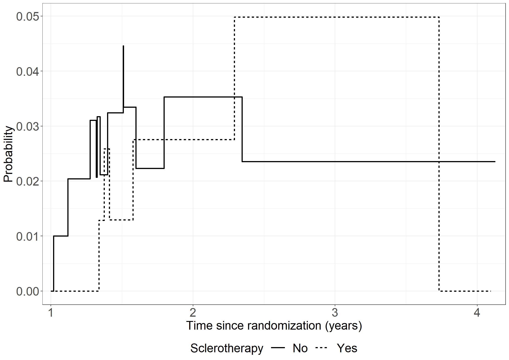
No code available - results are from: Andersen, P. K., Wandall, E. N. S., Pohar Perme, M. (2022). Inference for transition probabilities in non-Markov multi-state models. Lifetime Data Analysis, 28:585–604.